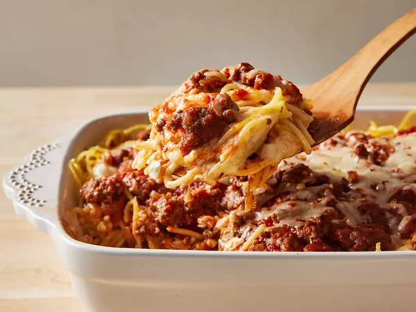

Baked Spaghetti

Description
Comforting baked spaghetti with plenty of melted cheese —
the perfect dish for potlucks, family gatherings,
or a weeknight dinner.
Ingredients
- 1 package Noodles
- 500g Beef
- 1 Onion
- 1 jar of meatless spaghetti sauce
- 1 tablespoon salt
- 2 eggs
- 300g cheese of your preference
- 250g melter butter
Steps
- Boil and drain the spaghetti.
- Cook the beef and onion together, then drain off the excess oil.
- Add the sauce and salt. Whisk the eggs, Parmesan, and butter in a separate bowl.
- Toss the spaghetti in the Parmesan mixture.
- Layer the ingredients in a prepared baking dish according to the detailed recipe.
- Cover and bake for 40 minutes. Sprinkle with mozzarella, then keep baking until the cheese is melted.